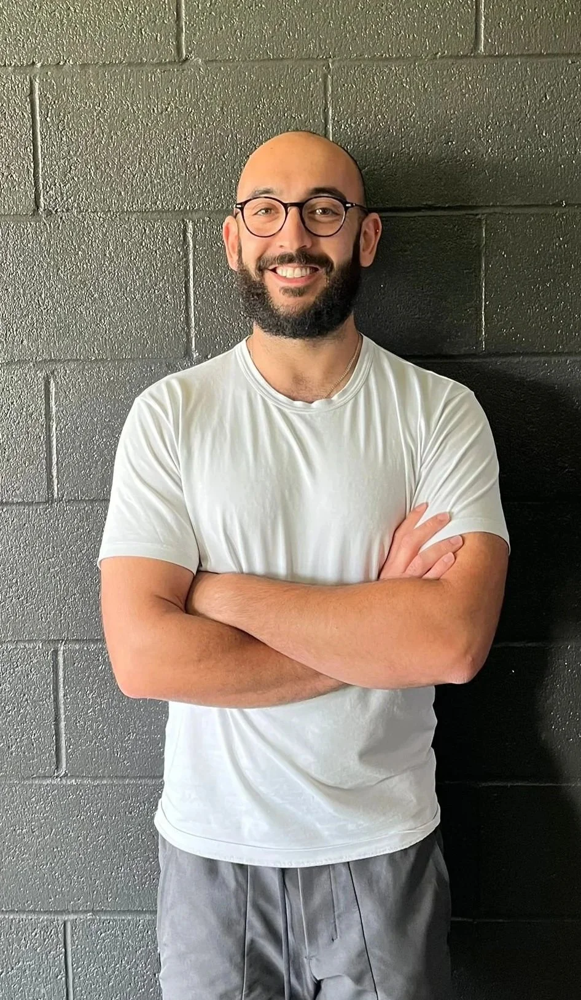

Just, walk.

Michael Bower · 2 min readMy message to you this week, is simple.
Walk.
Aside from sleep and nutrition, walking is probably the best recovery tool you have. It’s also the easiest, most accessible form of cardio training you could possibly do, with a huge return on investment. Seriously, huge. That, plus the few points listed below makes walking the ‘lowest-hanging fitness fruit’ there is.
Check this out:
Fat loss: you can burn more calories during the day doing non-exercise activities (like casual walking) than you do in your 60 minute workout. So if you’re looking to drop a few lbs, increasing steppage is a great start.
Joint pain: whether it’s low back, shoulder or hip, remember “motion is lotion”. Just a short brisk walk improves joint articulations and reduces pain.
Cognitive function: improved cerebral blood flow = improved mental clarity & productivity. Need I say more?
Mental wellbeing: it feels good to be outside. Simple as that.
Try to add just 1000 extra steps in each day, for the next 7 days. That’s approximately an extra 10 mins of walking every day.
Might not seem much but that’s 70 minutes of movement each week that you weren’t doing before, and the compounding benefits are huge.
And let me know how you get on! I’m a resource available to you so make use of me.
Now get out there.
Talk soon!